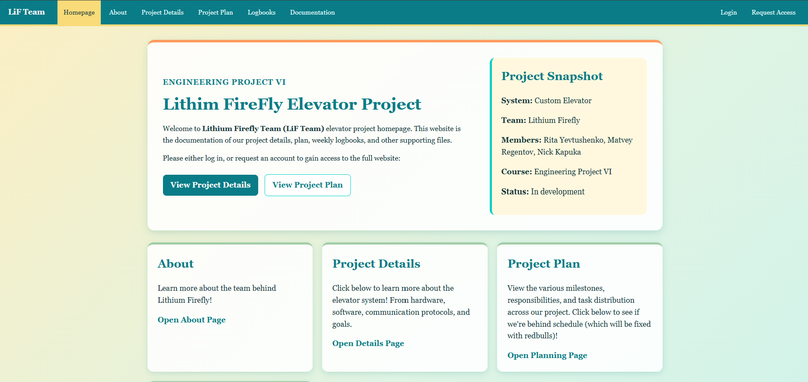
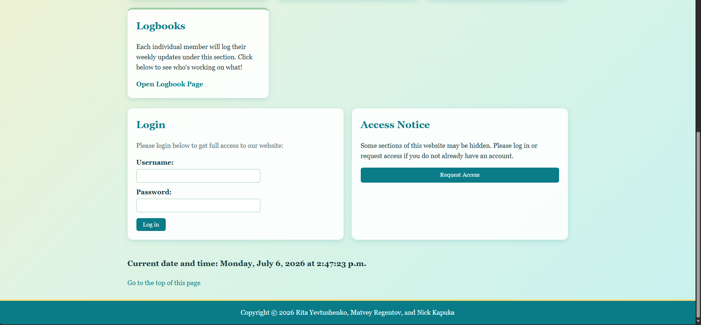
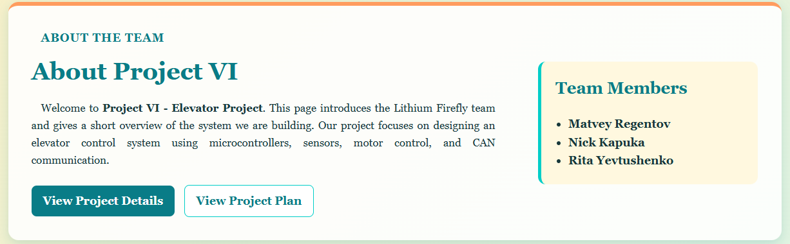
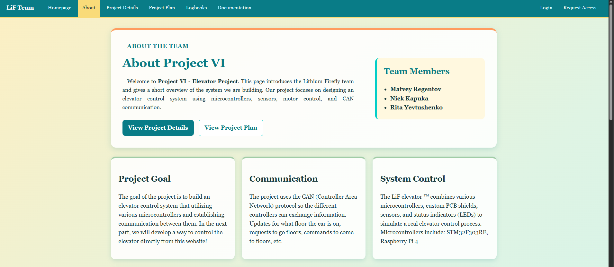
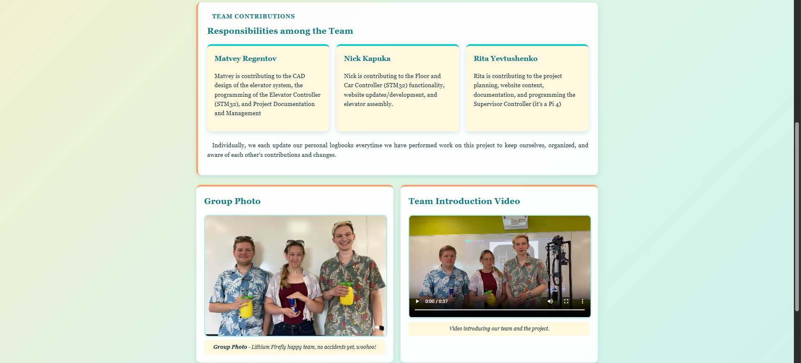

I began revamping the general website by moving toward a cleaner HTML5
layout using
<main>,
<section>, and
<article> elements. The
basic structure going forward looked like this:
With the new structure established, I began revamping the CSS by
adding reusable classes. First, I communicated with my group members
to establish a shared colour palette. This was handled through CSS
variables:
This established almost all of the colours used throughout the
website, apart from a few outliers. After that, I configured basic
global styling, such as the page background gradient:
I also adjusted common elements such as links, paragraphs, hover
behaviour, and other repeated styling. This gave the website a more
consistent base before moving on to page-specific layout classes.
Created a reusable JavaScript navbar
After the general styling was in place, I focused on custom classes
and layout elements that would be reused on every page. The biggest
example of this was the navigation bar, since every page needed the
same navbar.
Initially, the navbar was just a large block of HTML pasted into
multiple webpages. That became annoying very quickly, so I changed it
to load through a JavaScript function and a small placeholder div
instead:
<!-- Nav bar -->
<div id="navbar-placeholder" data-root=""></div>
<script src="js/navbar.js"></script>
The JavaScript file then builds the shared navbar dynamically:
With the navbar handled and a few more classes added to clean up the
index page, the homepage looked like this:

First homepage screenshot after the layout and styling updates

Second homepage screenshot after the layout and styling
updates
Updated the About page
With the index page done, I began revamping more pages, mostly
following the order of the navbar from left to right. The About page
was next.
In terms of structure, it was similar to the homepage: sections to
divide major content, divs as needed, and heading/paragraph elements
for the actual content. One example section is shown below:
<!-- general intro -->
<section class="intro-section about-intro">
<div class="intro-text">
<p class="section-label">About the Team</p>
<h1>About Project VI</h1>
<p class="intro-description">
Welcome to <b>Project VI - Elevator Project</b>. This page introduces
the Lithium Firefly team and gives a short overview of the system we are building.
Our project focuses on designing an elevator control system using microcontrollers,
sensors, motor control, and CAN communication.
</p>
<div class="button-row">
<a href="proj_details.html" class="button primary-button">View Project Details</a>
<a href="proj_plan.html" class="button secondary-button">View Project Plan</a>
</div>
</div>
<aside class="summary-card">
<h2>Team Members</h2>
<ul class="clean-list">
<li>Matvey Regentov</li>
<li>Nick Kapuka</li>
<li>Rita Yevtushenko</li>
</ul>
</aside>
</section>
That section is responsible for making this part of the webpage:

About page intro and team summary section
Other parts of the page used a section containing multiple article
cards, following a section-to-article layout like this:
<section class="about-grid">
<article class="info-card">
<h2>Project Goal</h2>
<p>
The goal of the project is to build an elevator control system that utilizing various
microcontrollers and establishing communication between them.
In the next part, we will develop a way to control the elevator directly from this website!
</p>
</article>
<article class="info-card">
<h2>Communication</h2>
<p>
The project uses the CAN (Controller Area Network) protocol so the different controllers can
exchange information.
Updates for what floor the car is on, requests to go floors, commands to come to floors, etc.
</p>
</article>
<article class="info-card">
<h2>System Control</h2>
<p>
The LiF elevator ™ combines various microcontrollers, custom PCB shields, sensors,
and status indicators (LEDs) to simulate a real elevator control process.
Microcontrollers include: STM32F303RE, Raspberry Pi 4
</p>
</article>
</section>
Here is the completed About page:

First screenshot of the completed About page

Second screenshot of the completed About pageThird screenshot of the completed About page
Continued revamping the remaining pages
After finishing the index page and About page updates, I continued
working through the rest of the website until about 6 AM the next day.
The goal for the next work session was to finish revamping every page
and reorganize the CSS into separate files, since at this point most
of the styling was still stored under
tropical.css.